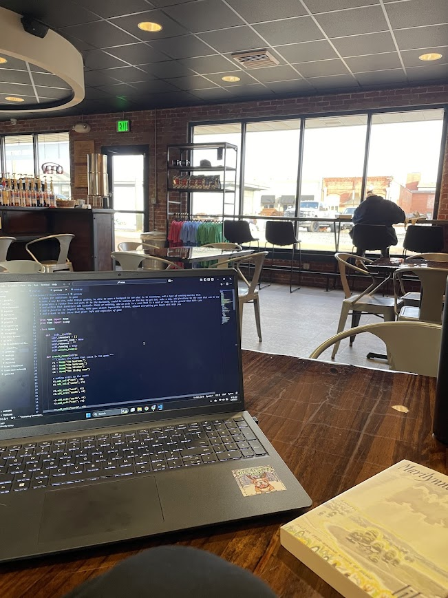
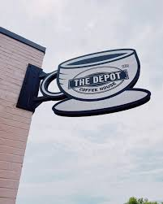

As a student, we may find ourselves in need of a space to sit down and focus on getting our work done without distractions. Sometimes, the campus can become too loud with the bustling of students, and constantly going to the library may become boring and repetitive. Here are some of the best study spots in Ruston that are perfect for students looking for a peaceful, aesthetic environment away from campus!
⋆.˚☕︎ The Depot ⋆.˚☕︎
-
Located not even a mile away from the IESB, the Depot is a coffee house that offers services including breakfast, lunch, and dinner
foods, as well as a variety of drinks. The Depot is a great place to study as it has a cozy, rustic atmosphere. The cost
is usually around $5-$10 for a considerably-sized drink. They are closed on Sundays, but from Mon-Thurs opened 7am-7pm, Fri 7am-5pm, and Sat 8am-3pm.
However, from experience it can tend to get a little hot inside, and when busy the small space traps noise.
📍 211 W Railroad Ave, Ruston, LA 71270
🖼️ Gallery:

